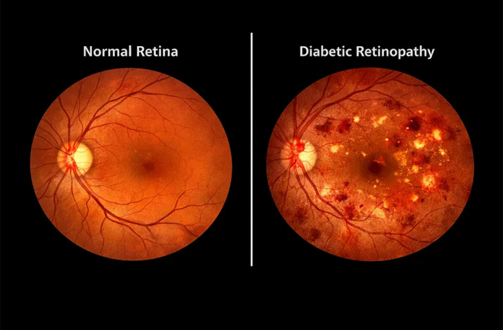

Articles
I write about data analytics, machine learning, and visual storytelling on Medium, exploring practical insights, workflow breakdowns, and project case studies.
Unlocking Hotel Insights: What 5,000 TripAdvisor Reviews Reveal About Sri Lankan Hospitality
An NLP case study mining 5,000+ TripAdvisor reviews across 100+ Sri Lankan hotels using ensemble sentiment models (VADER, SentiWordNet, DistilBERT) and fine-tuned BERT classifiers to turn guest feedback into actionable operational improvements.
Read on Medium →Harnessing Big Data for Climate Insights: Decoding a Decade of Weather Trends Across Sri Lanka
An end-to-end big data pipeline leveraging Hadoop MapReduce, Apache Hive, Apache Spark, and Tableau to process 14+ years of daily climate metrics across Sri Lanka, highlighting tool-chain synergies across batch, SQL, and in-memory analytics.
Read on Medium →Predicting Low Evapotranspiration Events in Sri Lanka Using Apache Spark MLlib
A predictive machine learning study using Apache Spark MLlib regression models to forecast low evapotranspiration events during critical agricultural transitions, achieving an 0.84 R² and 93% recall with Random Forest.
Read on Medium →Automated Diabetic Retinopathy Grading with Deep Learning: A Complete Pipeline
A end-to-end deep learning pipeline tackling a 36:1 class imbalance across 35,000+ retinal images, evaluating EfficientNet-B4 against a custom RetinalNet via focal loss, mixup, and Grad-CAM visual explainability.
Read on Medium →
© Chooladeva Piyasiri. All rights reserved.